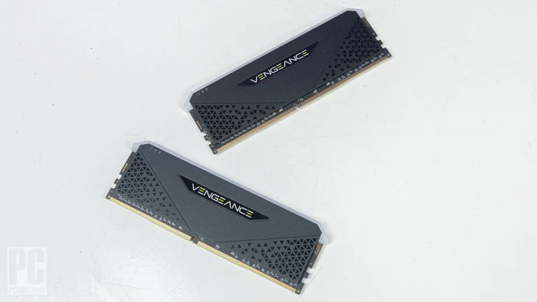
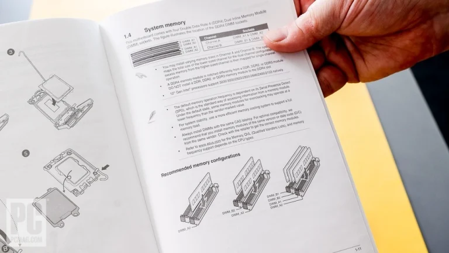
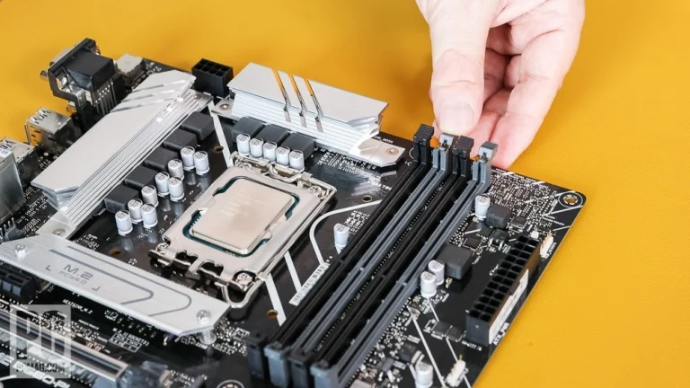
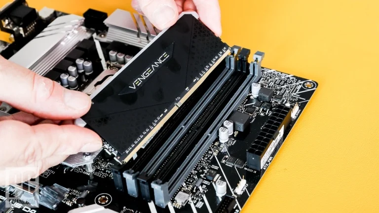
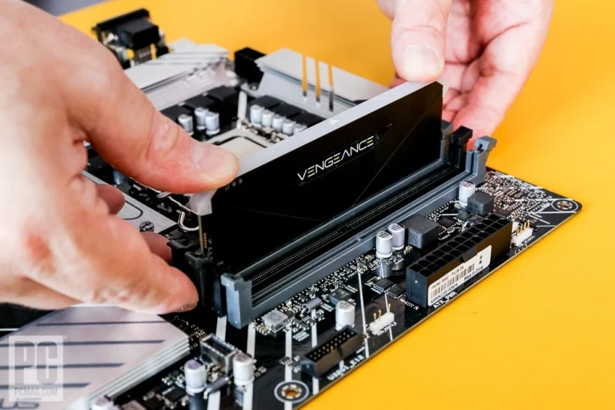
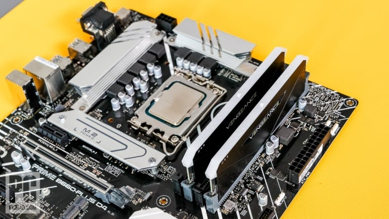
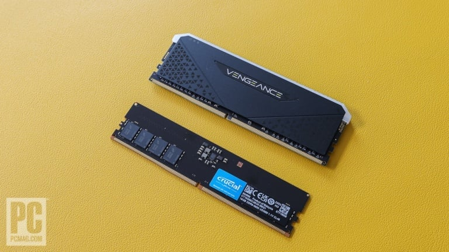

Let's move on. Some experienced PC builders will argue that the remaining steps should be done with the motherboard mounted inside the PC case; depending on the chassis and components you've chosen, that may be true. (Some cases have better clearance or room inside than others.) For this build, however, we'll perform the next two steps outside the case for visibility and ease of access. Our new desktop uses DDR4 memory. Some late-model Intel motherboards still use DDR4, while others use the newer DDR5 standard. All AMD Ryzen 7000 boards with the AM5 socket use DDR5; AM4 boards use DDR4. Any given motherboard supports only one or the other memory type. Both types come in the form of sticks called DIMMs (dual inline memory modules).
Look closely at your DDR4 modules. You'll see a notch on the edge of the contacts. Match that notch with the keying inside the motherboard memory slots; the DIMMs will install only one way. Before you install them, however, check your motherboard manual to see the optimal installation arrangement given the number of modules you have.
Most mainstream boards will have four DIMM slots, two of which you're probably filling. Don't pick just any slots; your motherboard manual will tell you which ones to use. (Ditto if you're using just one memory module or four modules in an eight-slot Core X or Threadripper platform.) Oftentimes you'll be using the second and fourth slot away from the CPU socket, but sometimes board makers throw a curveball. The DIMM sockets on the motherboard will have a lever either at one end or on both ends. Lower one or both levers on the slots you'll use ...
Then insert the module parallel to the board, and press firmly with a thumb at either end. The module should click into place, and the levers rise and engage the notches at either end.
Align the DIMM with the notch in the board
If you don't hear a good click, the DIMM is not in properly; tug a little to see if it comes loose. An improperly seated DIMM is a common cause of boot failure for new builders.
Installing DDR5 memory works the same way; the DIMM notch is just positioned differently to keep you from putting DDR5 in a DDR4 slot or vice versa. As above, check the modules' optimum slot placement in the manual and double-check their seating when you're done.
A Corsair DDR4 module (top) and a Crucial DDR5 module (bottom): Note the different notch positions. (Credit: Joseph Maldonado)